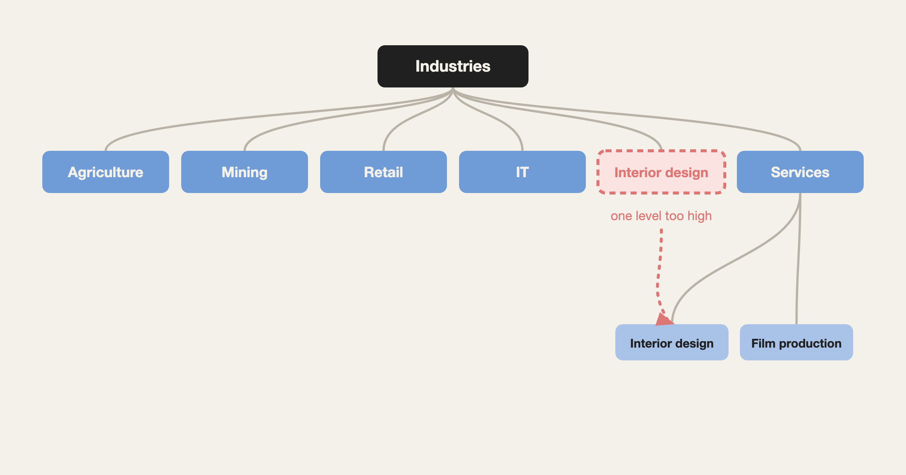

"Make it MECE" leaves out the part where you actually make it MECE

I've never had a project without it
MECE stands for mutually exclusive, collectively exhaustive. In plain terms: no overlaps, no gaps. I first learned it properly from Logical Writing in my first year of consulting.
In the five years since, I can't think of a piece of work that didn't need it. It shows up when you scope a whole project, and it shows up when you decide what goes on one page of a report. So I've heard "go make this MECE" a lot, and I've said it a lot.
"Make it MECE" only describes the result
The phrase has a problem, though. No overlaps and no gaps is what a list looks like once it's done. It says nothing about how to get there.
What actually gets you there is structure. And in my experience, the most common way structure goes wrong is level, meaning how abstract each item is compared to the others.
Most lists break because the levels don't match
Say you split industries into agriculture, mining, retail, IT and services. Now add film production and interior design to the same list. It looks off right away. Both belong inside services, one level down, so the list no longer splits cleanly.
That example is easy. On real projects, the levels are rarely that clear. The only way I know to get better at it is slow: understand each concept properly, understand how they relate to each other, and practise putting it into words.
On one project, the grouping came from the goal
On a customer lifetime value project for an appliance maker, I went back and forth for a long time on how to group customers. Some bought through retailers. Some bought on the company's own online store. Some used its home appliance app. Some used its smart TVs. The groups overlapped, and the same customer could move through several of them over time.
There was no right answer at the start. The way to split customers came from what we wanted to do with the split. And however messy it got while we worked it out, the version we presented had to be simple enough to understand in one read.
Why the habit matters
People who pay attention to levels and people who don't drift further apart over time. If you don't notice, you keep not noticing. And mixing levels is a bigger problem than a misaligned row on a slide, because the logic underneath stops holding.
The flip side: people who structure well are usually seeing the full scope of a problem. They're less likely to get stuck in one corner, and better at deciding what comes first.
I'll keep coming back to MECE. For now, this is the part I wanted to write down: "make it MECE" names the result, and the real work is getting the levels right.